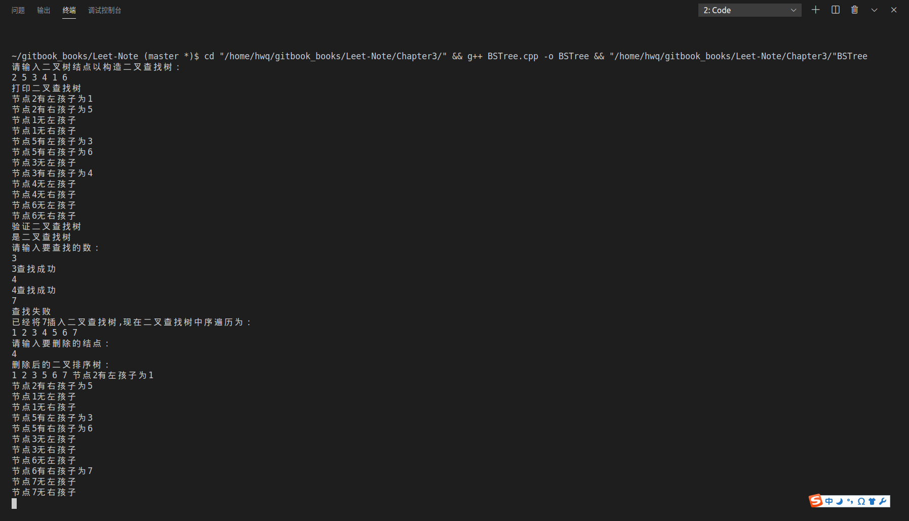

二叉查找树 BST (Binary Search Tree)
二叉查找树又称二叉搜索树、二叉排序树,特点如下:
- 左子树上所有结点值均小于根结点
- 右子树上所有结点值均大于根结点
- 结点的左右子树本身又是一颗二叉查找树
- 二叉查找树中序遍历得到结果是递增排序的结点序列。
算法分析
BST的结点结构：
//BST结点结构
template<typename T>
class BSTNode{
public:
T _key; //关键字
BSTNode *_lchild; //左孩子
BSTNode *_rchild; //右孩子
BSTNode *_parent; //父结点
//构造函数
BSTNode(T key ,BSTNode *lchild,BSTNode *rchild,BSTNode *parent):
_key(key),_lchild(lchild),_rchild(rchild),_parent(parent) {};
};
一、 判断是否为二叉查找树
根据第4条性质，可以利用中序遍历得出的结果序列为小->大，来判断是否为二叉查找树
template <typename T>
bool BSTree<T>::checkBST(BSTNode<T>* &tree) const
{
static BSTNode<T> *prev=NULL;
if(tree != NULL)
{
if(!checkBST(tree->_lchild))
return false;
if(prev != NULL && tree->_key < prev->_key)
return false;
prev = tree;
if(!checkBST(tree->_rchild))
return false;
}
return true;
}
可以看出，采用递归的方式，当前的结点值小于前一个结点的值，就满足性质。否则，判断失败。
二、 插入操作
首先创建一个新结点，用于存储关键值。
template <typename T>
void BSTree<T>::insert(T key)
{
//创建一个新的节点，使用构造函数初始化
BSTNode<T>* z= new BSTNode<T>(key,NULL,NULL,NULL);
if(!z) //如果创建失败则返回
return ;
//调用内部函数进行插入
insert(_Root,z);
}
接着，判断插入值与根结点的大小关系，插入左子树还是右子树。并循环向下查找。
//插入操作
//内部使用函数
template<typename T>
void BSTree<T> ::insert(BSTNode<T>* &tree,BSTNode<T>* z)
{
BSTNode<T>* parent = NULL;
BSTNode<T>* temp = tree;
//寻找插入点
while(temp!=NULL)
{
parent= temp;
if(z->_key > temp->_key)
temp= temp->_rchild;
else
temp=temp->_lchild;
}
z->_parent = parent;
if(parent==NULL) //如果树本来就是空树，则直接把z结点插入根结点
tree = z;
else if(z->_key > parent->_key) //如果z的值大于其双亲，则z为其双亲的右孩子结点
parent->_rchild = z;
else
parent->_lchild = z;//否则为其双亲的左孩子结点
}
三、删除操作
template<typename T>
void BSTree<T>::remove(T key)
{
BSTNode<T> *z, *node;
if ((z = search(_Root, key)) != NULL)
if ( (node = remove(_Root, z)) != NULL)
delete node;
}
四、查找操作
外部接口search函数
template <typename T>
BSTNode<T> * BSTree<T>::search(T key)
{
return search(_Root,key);
}
内部调用search函数
//非递归实现
//内部使用函数
template <typename T>
BSTNode<T>* BSTree<T>::search(BSTNode<T>* &tree,T key) const
{
BSTNode<T>* temp = tree;
while(temp != NULL)
{
if(temp->_key == key)//查找成功
return temp;
else if(temp->_key > key)//转向左子树，继续查找
temp = temp->_lchild;
else
temp = temp->_rchild;//转向右子树，继续查找
}
return NULL;//查找失败
}
五、遍历操作
1. 前序遍历：
外部preOrder接口
template<typename T>
void BSTree<T>::preOrder()
{
preOrder(_Root);
}
内部preOrder接口
template<typename T>
void BSTree<T>::preOrder(BSTNode<T>*&tree) const
{
if(tree)
{
cout<<tree->_key<<" ";
preOrder(tree->_lchild);
preOrder(tree->_rchild);
}
}
2. 中序遍历：
外部inOrder接口
template<typename T>
void BSTree<T>::inOrder()
{
inOrder(_Root);
}
内部inOrder接口
template <typename T>
void BSTree<T>::inOrder(BSTNode<T>*&tree) const
{
if(tree)
{
inOrder(tree->_lchild);
cout<<tree->_key<<" ";
inOrder(tree->_rchild);
}
}
3. 后序遍历：
外部postOrder接口
template<typename T>
void BSTree<T>::postOrder()
{
postOrder(_Root);
}
内部postOrder接口
template <typename T>
void BSTree<T>::postOrder(BSTNode<T>*&tree) const
{
if(tree)
{
postOrder(tree->_lchild);
postOrder(tree->_rchild);
cout<<tree->_key<<" ";
}
}
六、实验结果
如图： 